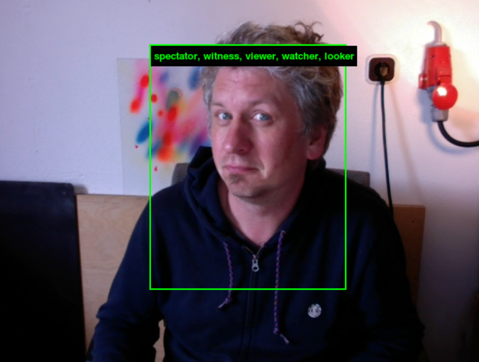
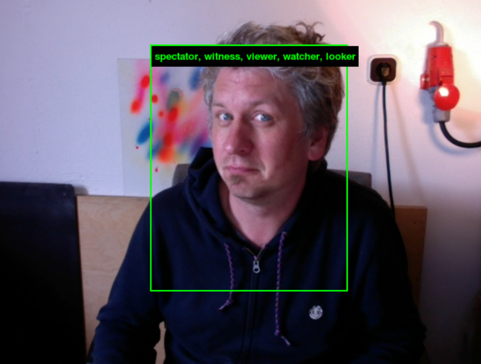

I found that I didn't save the result from ImageNet BUT I did remember it recognized Patrick Henry as a modern pianist. In this painting, he was just like other figures on these kind of artworks, with unrealistic facial details and mysterious emotion. However, the AI gave a specific answer to a rather common face. It seems the machine have categorized massive numbers of facial details that could help it distinguish the difference of a single cell. It also has many thing to do with privacy. Yet, its jugdement is not precise at all. Even people can not totally recognize a face by one scan. If the biased result from digital recognition preoccupies human's mind, it could somehow mislead the true judgement.